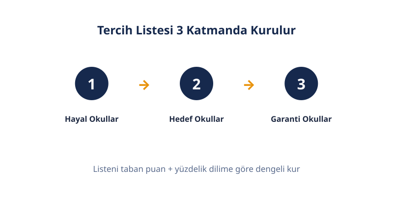

Öne Çıkanlar
- Listeyi puan sırasına göre değil, istek sırasına göre diz.
- Yerleştirme yukarıdan aşağı tarar: ilk yerleşebildiğin tercihe yerleşirsin, alt sıralara bakılmaz.
- LGS'de yüzdelik dilim, YKS'de başarı sırası esas ölçüttür.
- LGS'de merkezi 10, yerel 5, pansiyonlu 5 tercih hakkı vardır (2026 kılavuzuyla teyit edilecek).
- YKS'de en fazla 24 tercih yapılır; onaylanmayan tercih geçersizdir.
- İstemediğin okulu listeye yazma: üstteki tercihlere yerleşemezsen sistem seni ona yerleştirir.
Hayal–Hedef–Garanti Dengesi
Tercih listesinde denge nasıl kurulur? Liste 3 gruba bölünür: hayal (dilim ya da sıranın üstü), hedef (dilim ya da sıra civarı), garanti (dilim ya da sıranın altı).
Hayal grubu, geçen yıl senin diliminin üstünde kapatan okullardır. Yerleşme şansın düşüktür; ama çok istediğin okullardır ve listede yer almayı hak eder. Hedef grubu, dilimine denk kapatan okullardır; listenin gövdesini oluşturur. Garanti grubu, diliminin altında kapatan okullardır; yerleşme ihtimalin yüksektir.
LGS'nin 10 tercihinde yaygın kullanılan çerçeve 3 hayal, 4 hedef, 3 garantidir. YKS'nin 24 tercihinde aynı orantı büyütülür: yaklaşık 7 hayal, 10 hedef, 7 garanti. Oranlar kutsal değildir; ama 3 grubun da listede temsil edilmesi şarttır.
Listeni kapatmadan önce 3 soruyu cevapla: (1) Garanti grubum var mı? (2) Listede istemediğim okul var mı? (3) Yazdığım her okulun özel koşullarını sağlıyor muyum? Cevapların "evet, hayır, evet" ise listen hazırdır.
Listeyi kurarken tek bir yılın değil, son 2–3 yılın kapanış verilerine bak. Tek yıl, kontenjan sürprizi veya olağan dışı talep nedeniyle yanıltır; 3 yıllık trend okulun gerçek seviyesini gösterir. Bir de 4 yıl sonrasını düşün: okul türü ile üniversite hedefin uyumlu mu? Fen lisesi sayısal hedefe, sosyal bilimler lisesi sözel hedefe daha uygun zemin hazırlar.
LGS'de Tercih Mantığı
LGS'de tercih nasıl yapılır? LGS'de tercih, yüzdelik dilimine göre yapılır: okulun geçen yılki kapanış dilimini kendi diliminle karşılaştırırsın.
LGS'de 3 ayrı yerleştirme ekranı vardır. Yerel yerleştirme, adres ve okul başarı puanı gibi ölçütlerle sınavsız öğrenci alan okullar içindir. Merkezi yerleştirme, LGS puanıyla öğrenci alan okullar içindir. Pansiyonlu okullar ayrı bir ekrandan tercih edilir.
Okul türünü hedefine göre seç: fen lisesi sayısal ağırlıklı, sosyal bilimler lisesi sözel ağırlıklı, Anadolu lisesi dengeli, meslek lisesi mesleki yönelimlidir. Tür seçimi 4 yıllık lise hayatını ve üniversite hazırlığını şekillendirir; listeni kurarken bunu da hesaba kat.
2 kritik kural: (1) Yerel yerleştirme ekranı doldurulmadan merkezi yerleştirme ekranı açılmaz. (2) Merkezi yerleştirmede en fazla 10, yerel yerleştirmede en fazla 5, pansiyonlu okullarda en fazla 5 tercih yapılır; yerelde tek okul türünden en fazla 3 tercih yazılabilir. Tercihler e-Okul üzerinden girilir ve veli onayıyla kesinleşir. 2026 kılavuzu yayımlandığında bu sayfadaki sayılar ve tarihler teyit edilecektir.
Yerel ekranı ciddiye al: sınav puanın düşükse bile adresine yakın iyi bir Anadolu lisesine yerleşebilirsin. Yerel yerleştirme, merkezi kadar önemlidir.
YKS'de Tercih Mantığı
YKS'de tercih nasıl yapılır? YKS'de tercih, başarı sırasına göre yapılır: bölümün geçen yılki kapanış sırasını kendi sıranla karşılaştırırsın.
Puanlar sınavın zorluğuna göre yıldan yıla kayar; başarı sırası talebi daha doğru yansıtır. Bu yüzden "geçen yıl 400 puanla kapattı, benim puanım 410" cümlesi yanıltıcıdır. Doğru cümle şudur: "geçen yıl 25 bininci sıradan kapattı, benim sıram 22 bin."
Tercihler ÖSYM Aday İşlemleri Sistemi (AİS) üzerinden yapılır. En fazla 24 tercih hakkın vardır. Tercihlerini kaydettikten sonra mutlaka onaylamalısın; onaylanmayan tercih geçersiz sayılır. Tercih süresi bittikten sonra liste değiştirilemez veya iptal edilemez. Tercih kılavuzundaki özel koşulları (puan türü, okul birinciliği, cinsiyet, sağlık şartı) okumadan listeyi kapatma.
Özel koşullara örnek: bazı programlar yalnızca belirli puan türüyle öğrenci alır; bazı programlarda başarı sırası barajı aranır; bazıları sağlık raporu veya yaş şartı ister. Koşulu sağlamadığın programı listeye yazma — yerleştirilsen bile kaydın yapılmaz.
5 Yaygın Tercih Hatası
Tercihte en sık ne yanlış yapılır? En sık yapılan 5 hatanın ortak noktası aynıdır: yerleştirme mekanizmasını yanlış anlamak. Beşini de tek tek incele; listeni kapatmadan önce her birini kontrol et.
- İstemediğin okulu listeye yazmak. Yerleştirme yukarıdan aşağı tarar; üstteki tercihlere yerleşemezsen sistem seni istemediğin okula yerleştirir. "Yazayım, gitmem" deme; yerleştiğin okula kayıt yaptırmazsan hakların yanar.
- Geçen yılın tabanını garanti sanmak. Taban puanı geçen yılın sonucudur. Bu yılın kontenjanı, sınav zorluğu ve tercih yoğunluğu farklı olabilir; taban kayar.
- Listeyi puan sırasına göre dizmek. Puanı yüksek okulu üste yazmak seni öne geçirmez. Yerleştirme, puanı yüksek olana öncelik vererek herkesin listesini kendi istek sırasına göre tarar. Gerçekten istediğin okul üstte olmalıdır.
- Garanti tercih yazmamak. Yalnızca hayal ve hedef tercihlerden oluşan liste, açıkta kalma riski taşır. Her yıl binlerce aday bu yüzden yerleşemez.
- Tercihi son güne bırakmak ve onaysız bırakmak. Son gün sistem yoğunluğu yaşanır; YKS'de onaysız tercih geçersizdir, LGS'de veli onayı olmadan tercih kesinleşmez.
Sınırlamalar
Bu rehberin sınırları nelerdir? Bu rehber bilgilendirme amaçlıdır; bağlayıcı kurallar MEB ve ÖSYM'nin resmi kılavuzlarındadır.
- Geçen yıl verileri tahmindir: Taban puan ve kapanış sıraları yol gösterir; ama bu yılın talebi farklı olabilir.
- "Nasıl olsa nakil olur" yanılgısı: Nakil ve ek yerleştirme her zaman mümkün değildir; ilk yerleştirme en kritik aşamadır.
- 2026 kuralları teyit bekliyor: Tercih tarihleri ve sayıları, 2026 kılavuzları yayımlanınca bu sayfada güncellenecektir.
- Kişisel durumlar değişir: Ulaşım, yatılılık, okulun fiziki koşulları gibi faktörler bu rehberin kapsamı dışındadır; listeni kurarken bunları da hesaba kat.
Sıkça Sorulan Sorular


Tercih listesi nasıl hazırlanır?
Tercih listesi, okulları veya bölümleri gerçekten istediğin sıraya göre dizerek hazırlanır. Yerleştirme listenin en üstünden başlar; yerleşebildiğin ilk tercihe seni yerleştirir ve alt sıralara bakmaz. Bu yüzden liste 3 gruba bölünür: hayal, hedef ve garanti.
Hayal–hedef–garanti dengesi nasıl kurulur?
Hayal grubu, diliminin ya da sıranın üstünde kapanan okullardır; yerleşme şansın düşük ama çok istediğin okullar. Hedef grubu dilimine denk kapanan okullar, garanti grubu ise diliminin altında kapanan okullardır. LGS'nin 10 tercihinde 3 hayal, 4 hedef, 3 garanti dengesi yaygın kullanılan bir çerçevedir.
LGS'de yerel ve merkezi yerleştirme farkı nedir?
Merkezi yerleştirme, LGS puanına göre sınavla öğrenci alan okullara yapılır. Yerel yerleştirme ise adres, okul başarı puanı ve devam-devamsızlık gibi ölçütlerle sınavsız öğrenci alan okullara yapılır. Yerel yerleştirme ekranı doldurulmadan merkezi yerleştirme ekranı açılmaz; 2026 kılavuzu yayımlanınca kurallar teyit edilecektir.
YKS'de tercihte puan mı başarı sırası mı esas alınır?
Başarı sırası esas alınır. Puanlar sınavın zorluğuna göre yıldan yıla kayar; başarı sırası talebi daha doğru yansıtır. Bölümün geçen yılki kapanış sırasını kendi sıranla karşılaştır ve listeni buna göre kur.
Tercihleri istediğim sıraya göre mi, puana göre mi dizmeliyim?
İstediğin sıraya göre dizmelisin. Yerleştirme, puanı yüksek olana öncelik vererek her adayın listesini yukarıdan aşağı tarar. Puanı yüksek okulu üste yazmak seni öne geçirmez; gerçekten istediğin okul üstte olmalıdır.
YKS'de kaç tercih hakkım var?
En fazla 24 tercih hakkın vardır. Tercihler ÖSYM Aday İşlemleri Sistemi (AİS) üzerinden yapılır ve onaylanmayan tercih geçersiz sayılır. Tercih süresi bittikten sonra liste değiştirilemez.
LGS'de kaç tercih yapabilirim?
Merkezi yerleştirmede en fazla 10, yerel yerleştirmede en fazla 5, pansiyonlu okullarda en fazla 5 tercih yapılır. Yerel yerleştirmede tek okul türünden en fazla 3 tercih yazılabilir. Tercihler e-Okul üzerinden girilir ve veli onayıyla kesinleşir; 2026 kılavuzu yayımlanınca sayılar teyit edilecektir.
Tercih listesinde en sık yapılan hatalar nelerdir?
En sık yapılan 5 hata: istemediğin okulu listeye yazmak, geçen yılın tabanını garanti sanmak, listeyi istek sırası yerine puan sırasına göre dizmek, garanti tercih yazmamak ve tercihi son güne bırakıp onaysız bırakmak. Beşinin de ortak noktası aynıdır: yerleştirme mekanizmasını yanlış anlamak.
Sonraki Adımlar
Listeni kurmaya hazırsan tercih araçlarını kullan:
- Yüzdelik dilimine uygun liseleri bulmak için LGS tercih robotu sayfasında okulları listele.
- Başarı sırana uygun bölümleri görmek için YKS tercih robotu sayfasında tercih simülasyonu yap.